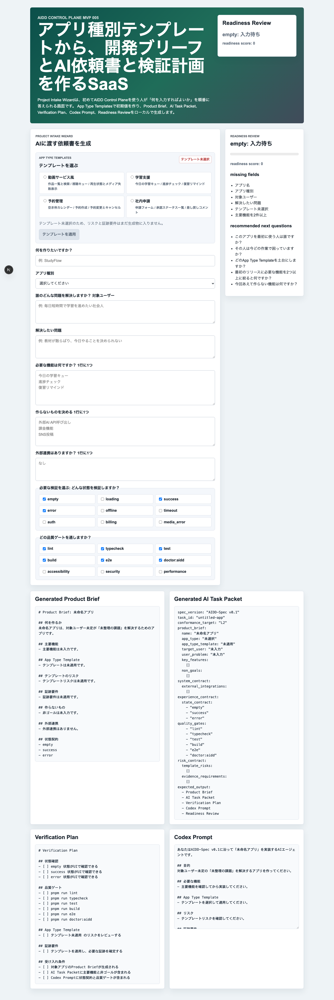
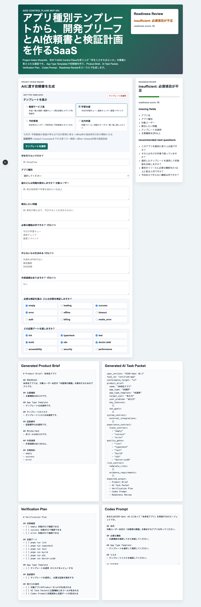
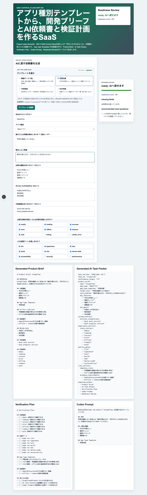
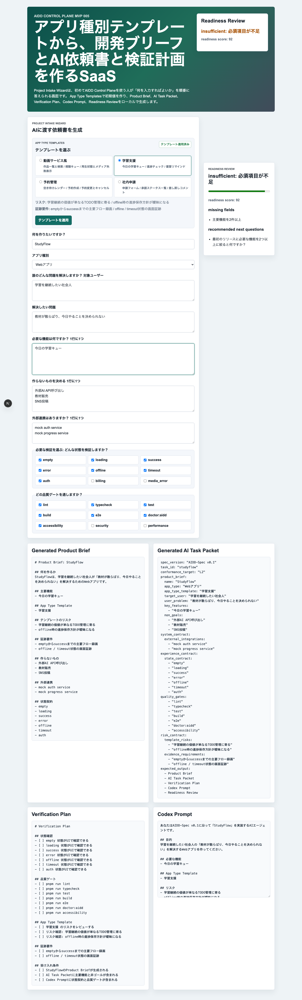
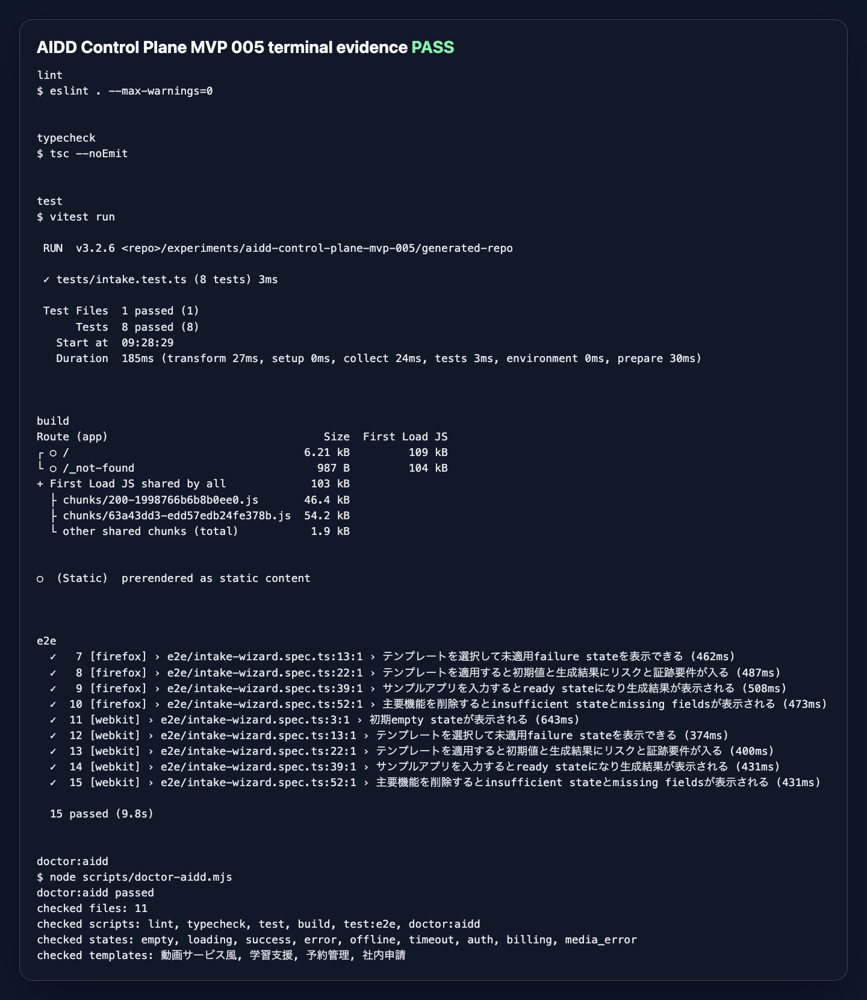

AIDD Control Plane MVP 005：アプリ種別テンプレートで、白紙の依頼を減らす
2026-06-30 / Codex Mastery Lab
対象: AIDD Control Plane SaaS化 / App Type Templates / AIDD-Spec v0.1
結果: Project Intake Wizardに、アプリ種別ごとの推奨機能・状態契約・品質ゲート・リスク・証跡要件を適用する入口を追加した
読者の悩み：何を検証すればいいか、最初から分からない
MVP 004では、ユーザーが「何を作りたいか」を入力すると、Product Brief、AI Task Packet、Verification Plan、Codex Promptを生成できるようにした。
ただ、実際に使う人の目線では、まだ大きな穴がある。
学習アプリなら、どんな失敗状態を見ればいいの？
動画サービス風なら、media failureや課金失敗は必要？
社内申請なら、権限別ビューを最初から入れるべき？つまり、フォームはできたが、初心者はまだ白紙から考えなければならない。
AIDD Control Planeが「誰でもベストに近いAI駆動開発フローと設計ドキュメントを作れるSaaS」を目指すなら、ここを放置できない。
今回の仮説
アプリ種別ごとのテンプレートを先に選べば、AIに頼む前の抜け漏れを減らせるはずだ。
たとえば、料理のレシピで「カレー」「味噌汁」「弁当」を選ぶと、必要な材料や注意点が変わる。Webアプリも同じで、学習支援、予約管理、動画サービス風、社内申請では、最初に気にする状態や証跡が違う。
今回の仮説はこうだ。
アプリ種別テンプレート
-> 推奨機能
-> 状態契約
-> 品質ゲート
-> リスク
-> 証跡要件
-> Product Brief / AI Task Packet / Verification Plan / Codex Promptこれが一画面でつながれば、ユーザーは「何をAIに渡すべきか」だけでなく、「何を検証すべきか」も見えるようになる。
実験内容
Codexに、MVP 004のProject Intake Wizardを壊さず、MVP 005としてApp Type Templatesを追加させた。
今回のテンプレートは4種類にした。
| テンプレート | 目的 | 代表的な追加観点 |
|---|---|---|
| 動画サービス風 | WatchFlow系の実験に接続しやすい | media_error、auth、billing、mock media |
| 学習支援 | 初心者にも分かりやすい継続アプリ | offline、timeout、進捗証跡 |
| 予約管理 | 予約・変更・キャンセルを扱う | billing failed、二重予約リスク |
| 社内申請 | 業務ツールの権限差分を見る | auth、権限別ビュー、差し戻し |
外部AI APIやDB永続化はまだ入れていない。今回の目的は、まず「テンプレートが設計入力として効くか」を確かめることだからだ。
初期状態：テンプレート未選択を隠さない
初期画面では、Readiness Reviewに加えて、App Type Templatesのfailure stateが見える。

ここで大事なのは、単に空のフォームを出すのではなく、テンプレート未選択 を明示したことだ。
AIに頼む前に、次の問いをユーザーへ返す。
どのApp Type Templateを土台にしますか？これはAIDD-Specでいうと、Product BriefとState Designを作る前の補助線になる。
failure state：選んだだけでは、まだ適用されていない
テンプレートを選択すると、リスクと証跡要件が表示される。ただし、まだフォームへ反映していなければ テンプレート未適用 と出す。

この状態をわざわざ作った理由は、SaaSとして重要だからだ。
「選んだつもり」「反映されたつもり」のままAIに渡すと、依頼書と検証計画がずれる。AIDD Control Planeは、そういう小さなズレを実行前に止める必要がある。
テンプレート適用後：AI依頼書にリスクと証跡が入る
学習支援テンプレートを適用し、StudyFlowというサンプル案を入力した。

この状態では、次がフォームと生成結果へ反映される。
- 推奨機能: 今日の学習キュー、進捗チェック、復習リマインド、理解度メモ
- 状態契約: empty、loading、success、error、offline、timeout、auth
- 品質ゲート: lint、typecheck、test、build、e2e、doctor:aidd、accessibility
- リスク: 学習継続の価値が単なるTODO管理に寄る、offline時の進捗保存方針が曖昧になる
- 証跡要件: emptyからsuccessまでの主要フロー録画、offline / timeout状態の画面証跡
生成されるProduct Brief、AI Task Packet、Verification Plan、Codex Promptにも、テンプレート名、リスク、証跡要件が入る。
つまり、ただのフォーム補完ではない。AIに渡す依頼そのものが、少し標準化される。
不足状態：主要機能を消すと、readyではなくなる
テンプレートを適用しても、ユーザーが必要な情報を消せば、Readiness Reviewは再び不足を示す。

今回は主要機能を空にして、主要機能を2件以上 がmissing fieldsに戻ることを確認した。
テンプレートは便利だが、最終的な依頼書の中身を保証するわけではない。だから、テンプレート適用後もReadiness Reviewを通す。
実装で追加したもの
Codexには CODEX_PROMPT.md で次を依頼した。
- App Type Templatesを4件以上用意する
- 各テンプレートに推奨機能、状態契約、品質ゲート、リスク、証跡要件を持たせる
- テンプレート未選択/未適用をfailure stateとして画面に表示する
- テンプレート適用ボタンでフォームへ反映する
- 生成されるProduct Brief / AI Task Packet / Verification Plan / Codex Promptにテンプレート由来の情報を含める
- unit test / Playwright E2E / doctor:aiddを更新する実装後、Codexの自己申告は信用せず、こちらで個別に検証した。

検証ログ
今回の独立検証結果は次の通り。
| command | result |
|---|---|
pnpm install --frozen-lockfile | pass |
pnpm run lint | pass |
pnpm run typecheck | pass |
pnpm run test | 8 tests passed |
pnpm run build | pass |
pnpm run test:e2e | Chromium / Firefox / WebKitで15 tests passed |
pnpm run doctor:aidd | pass |
E2Eでは、次を確認した。
初期empty stateが表示される
テンプレート未選択が表示される
テンプレート選択後にテンプレート未適用が表示される
テンプレート適用後に初期値・リスク・証跡要件が生成結果へ入る
主要機能を削除するとinsufficient stateに戻る
Chromium / Firefox / WebKitで同じ確認が通るなお、Next.js buildではESLint plugin検出に関する警告が出ている。ビルド自体は成功したが、AIDD-Spec的には将来の改善対象として残す。
読者がすぐ使えるチェックリスト
| チェック項目 | 何を確認したいのか | なぜ必要か |
|---|---|---|
| アプリ種別を選んだか | 学習支援、予約管理、動画サービス風などの前提を決めたか | 白紙の依頼だと、AIが重要な状態を省きやすいから |
| テンプレートを適用したか | 選択しただけでなく、フォームと生成物に反映されたか | 「選んだつもり」のズレを防ぐため |
| 状態契約が2件以上あるか | empty/error/offlineなど、画面で確認する状態があるか | happy pathだけのアプリを避けるため |
| リスクが依頼書に入っているか | 失敗しやすい観点をAIに渡しているか | 修正指示ではなく、事前予防に変えるため |
| 証跡要件があるか | スクリーンショット、E2Eログ、terminal evidenceの種類が決まっているか | 完了判断を感想ではなく証拠にするため |
| 3ブラウザE2Eを通したか | Chromium / Firefox / WebKitで主要フローが動くか | ローカルの見た目だけで成功扱いしないため |
AIDD-Specへの接続
今回のMVP 005は、AIDD-Spec v0.1の次の項目に接続する。
- Product Brief
- AI Task Packet
- State Design
- Acceptance Criteria Matrix
- Test Plan
- Verification Evidence
- Learning Log
重要なのは、テンプレートを「便利なプリセット」で終わらせないことだ。
AIDD-Specでは、テンプレートはAIに渡す共通説明の部品になる。アプリ種別ごとに、必要な状態、リスク、証跡を最初から入れておくことで、Codexやレビュー担当者が同じ前提で確認しやすくなる。
SaaSとしての意味
AIDD Control Planeは、別のコーディングエージェントを作るSaaSではない。
今回のApp Type Templatesは、次の価値に近い。
ユーザーの粗いアプリ案
-> アプリ種別テンプレート
-> 足りない質問
-> Product Brief
-> AI Task Packet
-> Verification Plan
-> Codex Prompt
-> 実行証跡この流れが育つと、将来的には「動画サービス風」「予約管理」「社内申請」だけでなく、チーム独自のテンプレートも保存できる。
たとえば、会社ごとの品質ゲート、セキュリティ基準、必要なスクリーンショット、CI artifactの条件をテンプレート化できる。
これが、AIDD Control Planeを「設計書作成ツール」ではなく、「AI駆動開発の品質を揃える操作盤」に近づける。
noteで読む価値について
今回の記事で大事なのは、「AIで記事を量産した」ことではない。
実際にCodexへ依頼し、実装を受け取り、別プロセスで検証し、3ブラウザE2Eを通し、スクリーンショットとterminal evidenceを残した。これは実験した本人しか書けない一次情報だ。
noteで読まれる可能性があるのは、こういう再利用できる失敗・修正・証跡のセットだと思う。
次回
次の自然な改善は、テンプレートを選ぶ前のProject Intakeをさらに初心者向けにすること、または CI/artifact連携をSaaS画面に近づけること だ。
特にMVP 006では、生成したAI Task Packetと実行ログを結びつけて、どの品質ゲートが本当に通ったのかを画面で追えるようにしたい。